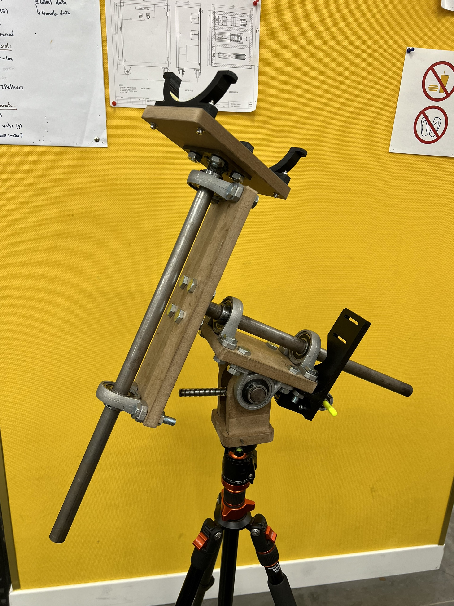
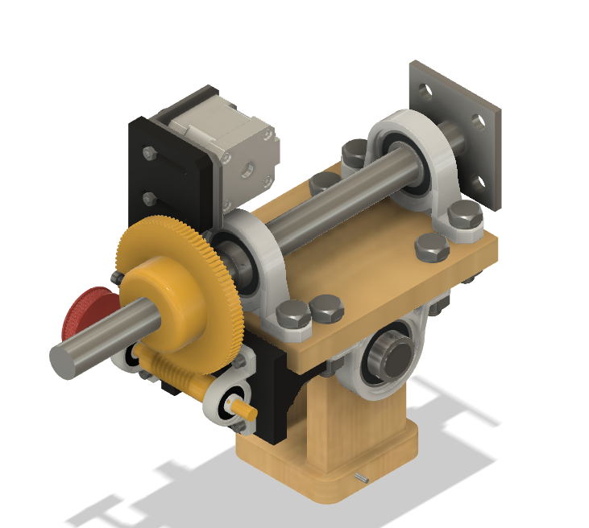
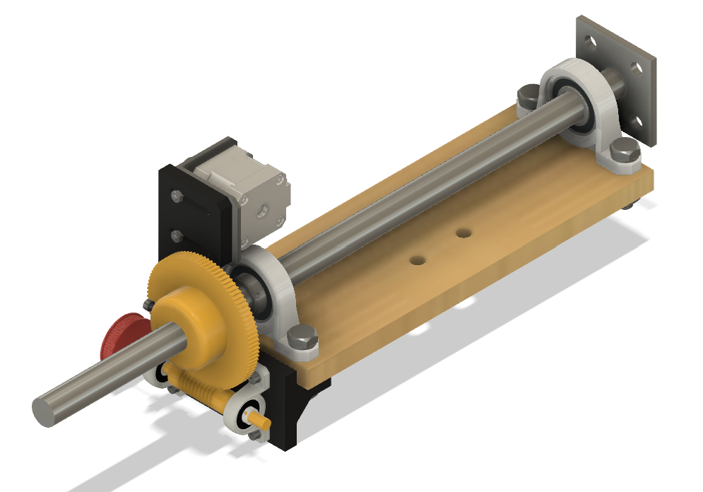
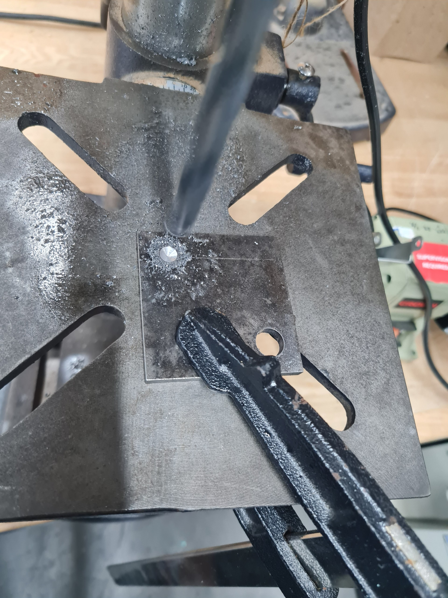
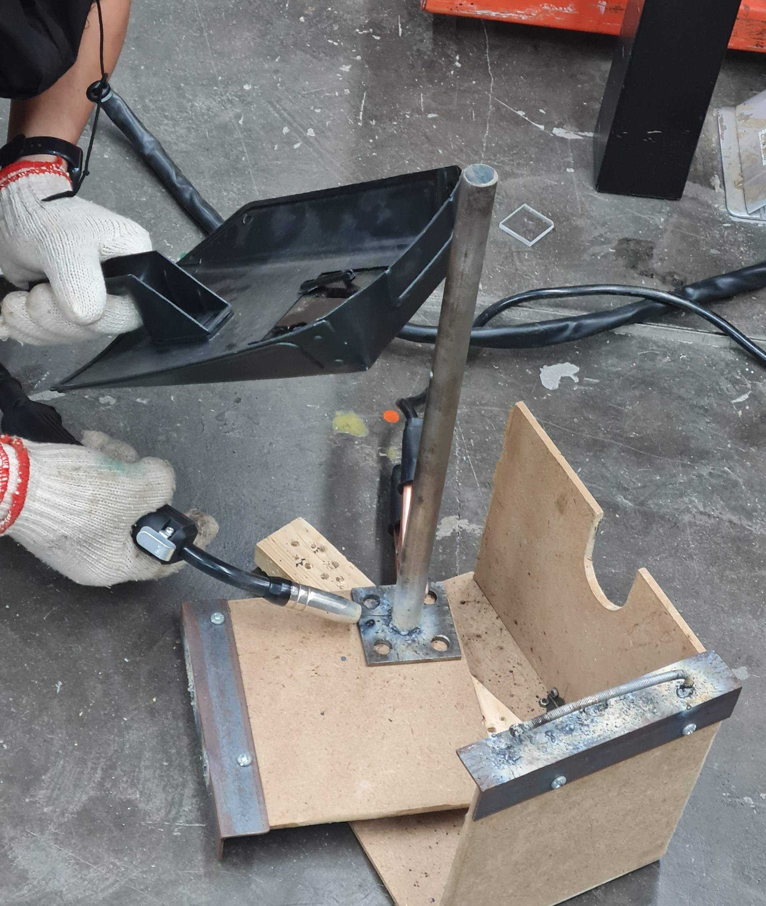
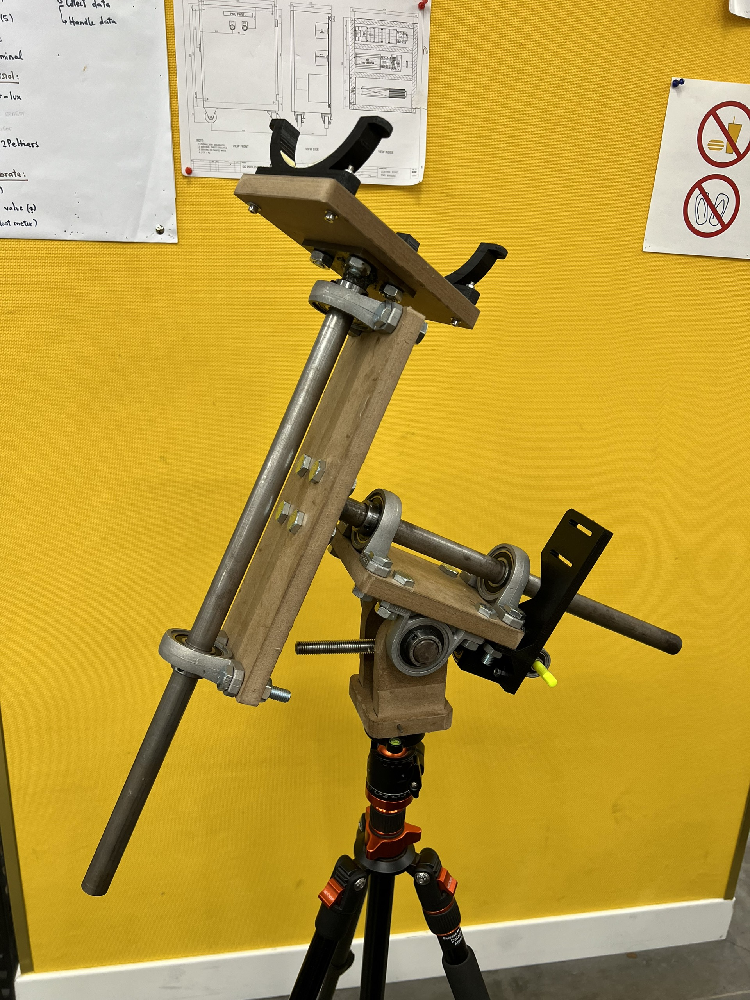
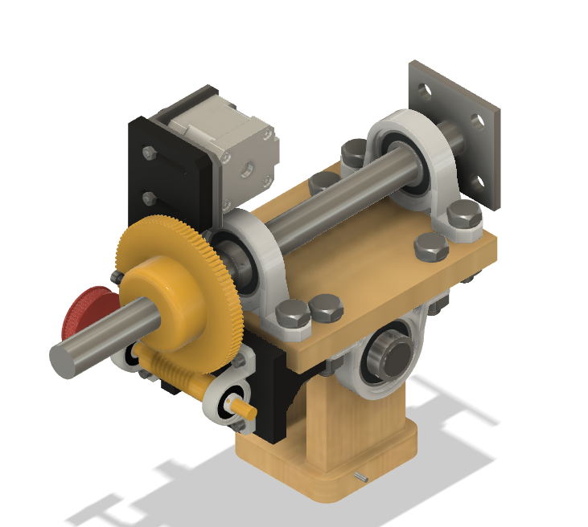
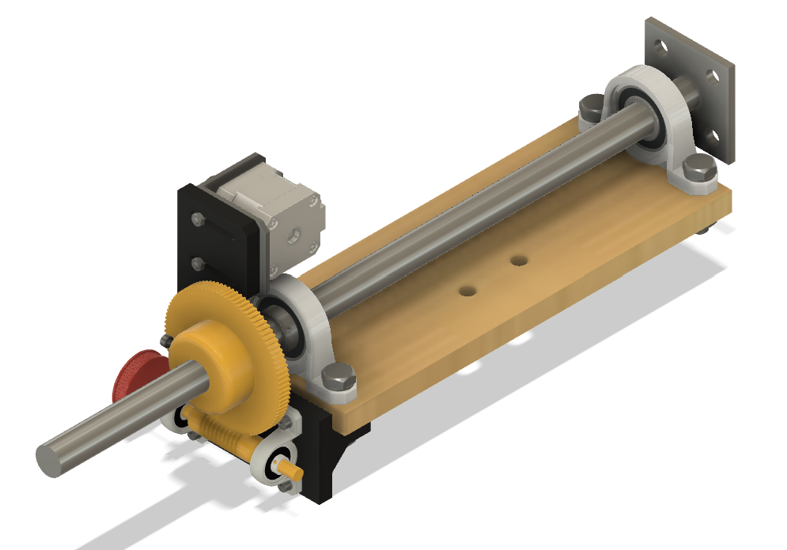
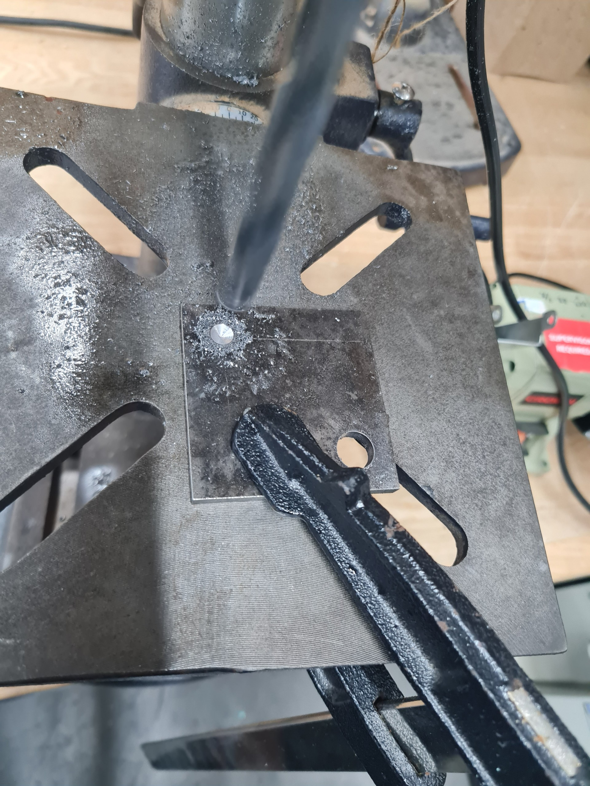
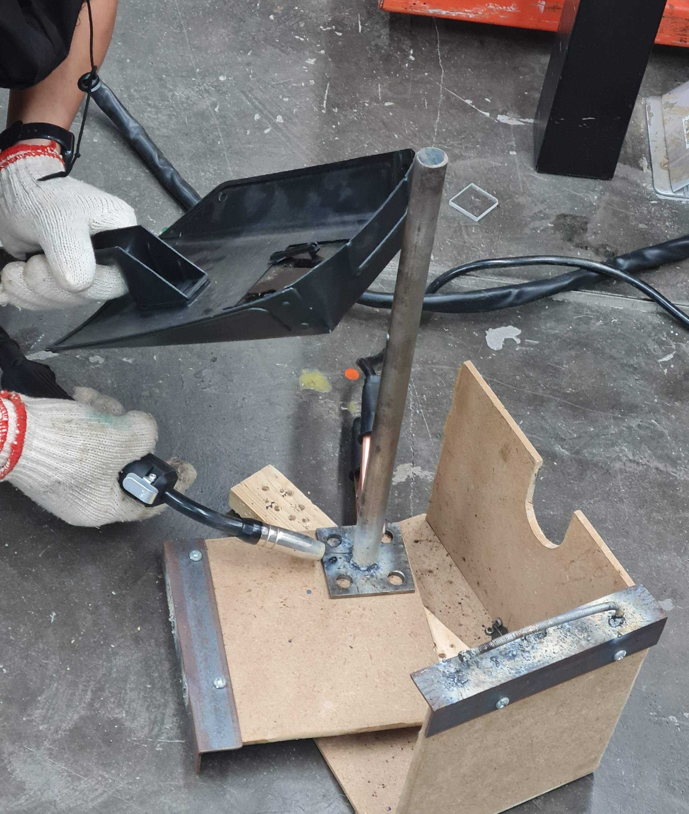

4-DOF Robotic Arm for Astronomical Objects Autotracking
(Mechanical part)
Spring 2024 - Junior Student - University
This is my personal project for the Mechanical Design course, and it’s also an improved version of a project I made during my high school. As its name suggests, the device is a mechanical robotic arm with 4-DOF (degrees of freedom) so that it can simulate the motion of the Earth to navigate the telescope and stay fixed on any astronomical objects automatically. By applying the properties of anti backlash worm gear for driven mechanism, the motion resolution of the robotic arm is extremely small, up to 1.116 arcsecond (~ 0.00031 degree), so that it can keep any space objects within the telescope’s view for all day. The whole mechanical system will be controlled by an electrical box, it’s also my another upcoming project after this one.
 








